Electricity Friend
From bystander to hero.
A national public-safety campaign that turns people into the grid’s first line of safety: spot exposed electrical equipment, keep a safe distance and report it in seconds through the app.
- Client
- Saudi Energy
- Role
- Concept, visual direction and design
- Scope
- Key visuals, poster series, digital
- AI tools
- Magnific, Nano Banana Pro, Photoshop
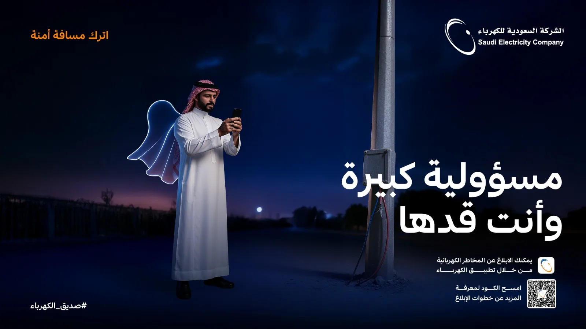
From bystander to hero.
- The objective
- Get people to report electrical hazards: keep a safe distance, then report through the app.
- The idea
- Every report is an act of heroism: a cape of light turns ordinary Saudis into quiet heroes.
- Visual direction
- Blue-hour scenes in electric blues, with orange kept only for the safety message.
Step by step
From the first sketch to the final file.
Step 01
Sketch and brief
Pen and paper, Claude, ChatGPT
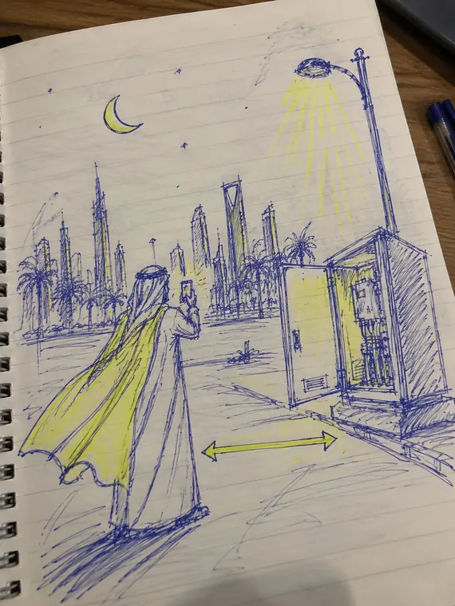
Concept sketch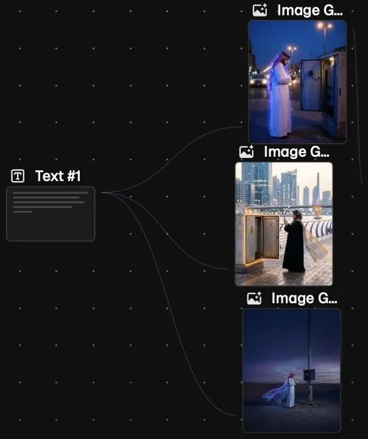
Brief to promptsOne idea sketched first: a cape of light and a safe distance from the cabinet. The brief then written as prompts.
Step 02
Generate the scenes
Magnific Spaces, Nano Banana Pro
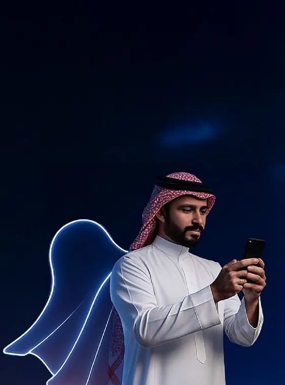
Night street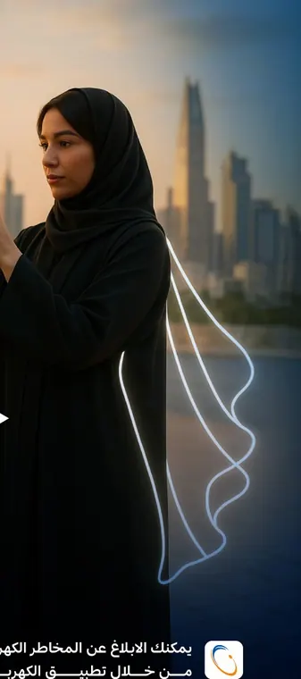
Cape of lightBlue-hour scenes generated one per everyday moment, keeping the same light, wardrobe and glowing cape.
Step 03
Type and call to action
Photoshop
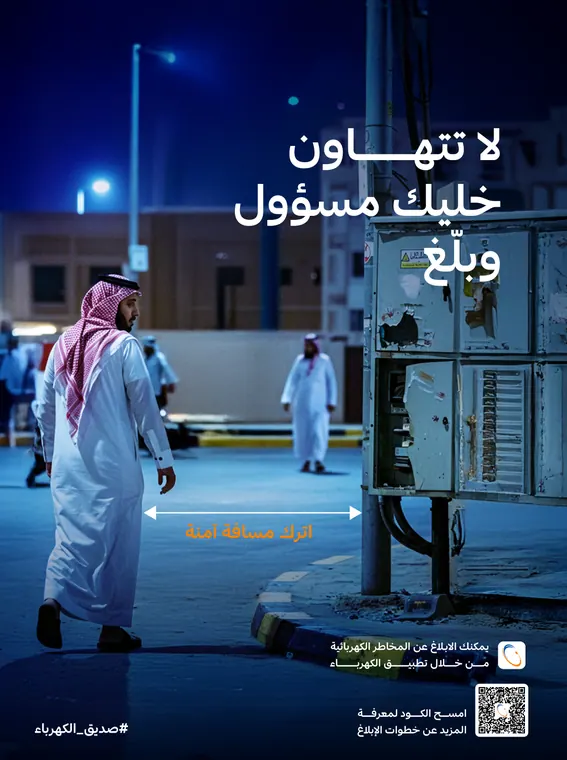
Poster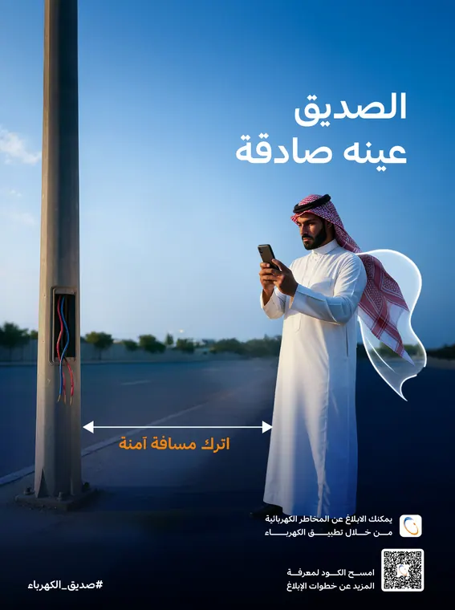
PosterSelected scenes upscaled, then the headline, the orange safe-distance line and the app call to action set in Photoshop.
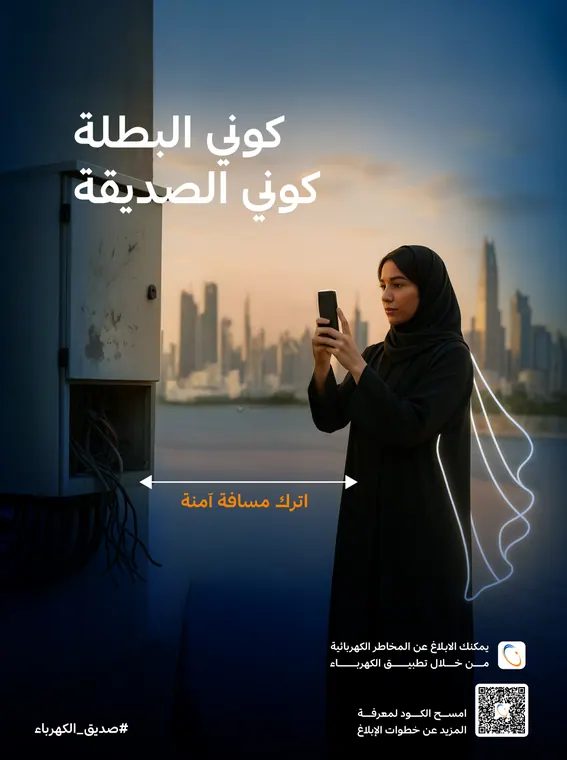
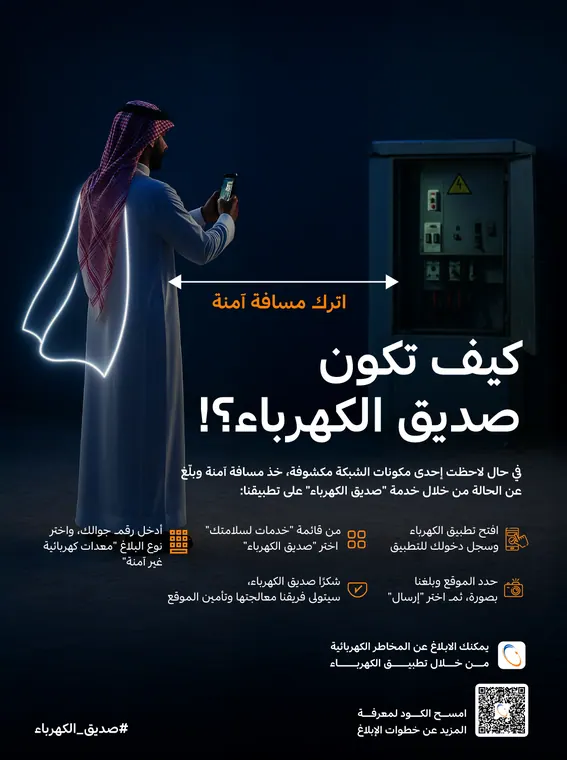
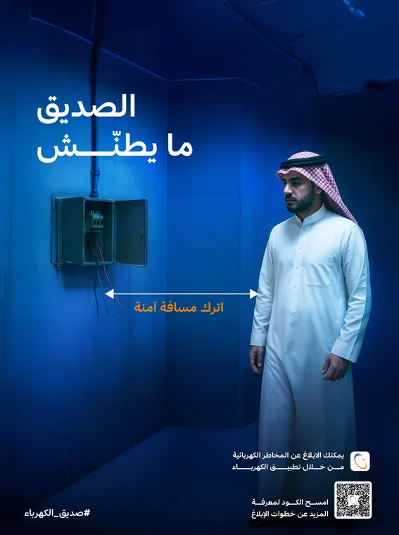
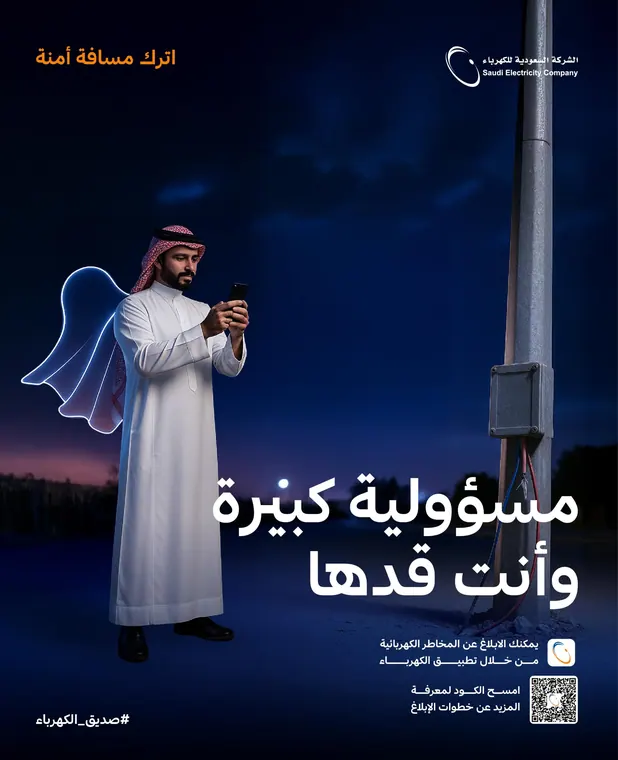
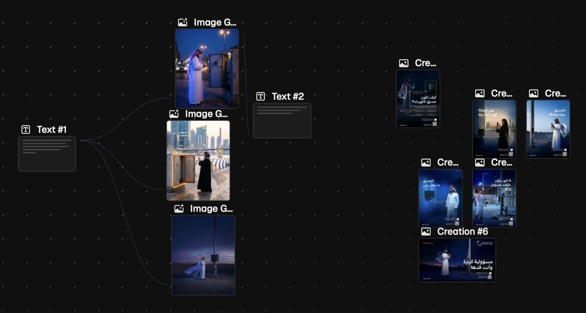
Behind the scenes
From brief to hero
- BriefOne idea: a cape of light turns everyday people into quiet heroes.
- GenerateBlue-hour scenes generated with Nano Banana Pro, one for each everyday moment.
- DesignSelected scenes upscaled, then the type, the safe-distance line and the app call-to-action set in Photoshop.